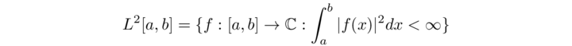
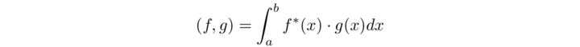
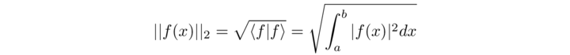

Lo spazio L2 delle funzioni quadrato sommabili
Consideriamo l’intervallo reale [a, b], con L = b − a > 0. Definiamo lo spazio delle funzioni a quadrato sommabile sull’intervallo considerato
dove l'integrale può essere inteso nel senso di Lebesgue. La somma tra funzioni ed il prodotto di una funzione per un numero complesso saranno definiti da
(f + g)(x) = f (x) + g(x) , (αf)(x) = α [f(x)]
ed il prodotto scalare sarà definito come
E’ immediato verificare che questo soddisfa le condizioni per essere un prodotto scalare. La norma (indotta dal prodotto scalare) delle funzioni in L2 [a, b] è ||f|| = |f |, vale a dire
Les fonctions de carré sommable en physique
En physique quantique, une fonction d'onde |Ψ(r,t) ⟩ associée à une particule est de carré sommable relativement à la variable spatiale. Physiquement, en effet, le carré du module de la fonction d'onde |Ψ(r,t) ⟩ est une densité de probabilité de présence de la particule au point r et à l'instant t. Par conséquent, l'intégrale de ce carré vaut 1, puisque la particule se trouve quelque part dans l'espace. En termes plus mathématiques, une fonction d'onde est de norme 1 dans l'espace des fonctions de carré sommable.